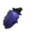
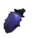

Wait, did you see the withering worms wander?
We lost them all. They were never ours. We tried to catch them. They shapeshift according to the environments they travel through. If you’d try to eat them, they would slip out of your hands like wet clay. Sometimes they turned into ropes, creating a safety net for all of us. Others would hide in the garden, burrowing to protect themselves from hungry travellers. In the depths of soils supporting us, we find refuge in composting shared stories.
Be welcome to become a part of our ecosystem, as the tasks of shaping, tying, tasting, digging and resting are re-organized and we-organized as we pass on the rhythms. Will you jump with us into the wormholes of the never ending burning garden or do we watch to see whether the winds wait?
Reframing Climate Colonialism, Pleasuring the Radical Imagination will present different materializations and workshops that spread further what we have been learning in our COOP. As a critique on the exploitation and destruction brought about by climate colonialism, we will present scenes of adaptability, sensuality, reciprocity, webs of care and staying with the trouble.


 
